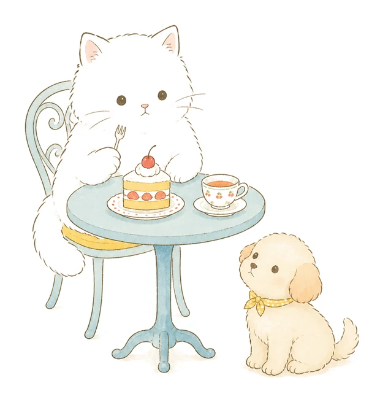

Birthday Report
숫자로 보는
내 2027년

생일 여덟 자리에 담긴 운명 수, 2027년의 흐름, 태어날 때 뽑힌 타로 카드까지 한 장에 담았어요.
Birthday Report

생일 여덟 자리에 담긴 운명 수, 2027년의 흐름, 태어날 때 뽑힌 타로 카드까지 한 장에 담았어요.
In This Report
수비학은 생년월일 숫자로 성향과 흐름을 읽는 서양 점술이에요. 재미로 보는 참고용이고, 인생의 결정을 대신하지 않아요.
My Number
Destiny Number
My Stats
5점 만점01 · Profile
02 · Personal Year
한마디
03 · Life
04 · Birth Tarot
PNG로 저장해서 스토리·단톡방에 올려 보세요. 생일은 이미지에 담기지 않아요.
수비학은 재미로 보는 참고용이에요. 결과가 사람을 정하지는 않아요.